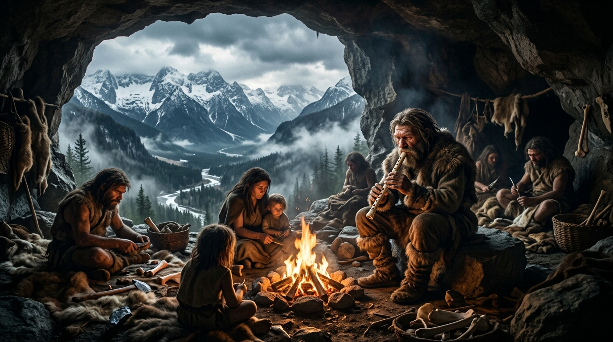

四大族群地層演進：
從洞穴骨笛到阿爾卑斯基因融爐
布萊德湖並非孤立的世外桃源，而是朱利安阿爾卑斯山口與波河平原、多瑙河流域交會的天然樞紐。 五萬年間，冰川退卻、農耕擴張、鐵器冶煉與斯拉夫浪潮在這片石灰岩與湖澤交錯的地貌上層層沉積，形成了今日斯洛維尼亞人的血脈基石。
族群演變與基因地層疊加圖解
布萊德與阿爾卑斯史前關鍵遺址地圖
點擊地圖上的各個遺址標記或下方分類標籤，即可縮放並查看詳細考古發掘成果與照片。
史前最原始居民：尼安德塔人與世界最古老骨笛
「尼安德塔人」與「克羅瑪儂人」雖因德國尼安德河谷（1856）與法國克羅瑪儂岩棚（1868）的首度發掘而得名，但那僅是學界命名的「型態標本產地」，而非其唯一的活動邊界。 考古學家是如何百分之百確定他們曾繁衍生息於斯洛維尼亞阿爾卑斯山區？
考古學五重「鐵證鏈」：如何確認古人類在此活動？
世紀考古重大發現：迪夫耶貝貝骨笛（Divje Babe Flute）
在距離布萊德湖西南約 45 公里的迪夫耶貝貝洞穴（Divje Babe I Cave，伊德里亞河谷），斯洛維尼亞科學院考古學家發掘出了著名的莫斯特文化層：
- 年代測定：經地層放射性與電子自旋共振測定，距今約 55,000 至 60,000 年（屬於尼安德塔人獨占歐洲的時期）。
- 人類意義：骨笛由幼年洞熊左側股骨人工精準鑽孔製成，是全人類已知最古老的樂器。
- 伴生遺物：同地層出土了數百件尼安德塔人莫斯特刮削器、尖狀器與人工用火炭燼層。
而在海拔 1,700 公尺的波托奇卡洞穴（Potočka zijalka）與摩霍爾洞穴（Mokriška jama），考古學家則發掘出距今約 35,000 年前早期智人（克羅瑪儂人）留下的歐洲最古老骨針與奧瑞納石刃，證實智人追隨高山洞熊與馬鹿進入了朱利安與卡姆尼克阿爾卑斯山區。

尼安德塔人部族在阿爾卑斯石灰岩洞穴邊圍繞火堆、吹響洞熊骨笛的想像重構
斯洛維尼亞國家博物館國寶 (Narodni muzej Slovenije)
迪夫耶貝貝骨笛真品現存放於盧比亞納國家博物館，為人類史前音樂文明第一號見證物。
湖畔與水上木樁定居者：最古老木輪與布萊德湖獨木舟

新石器先民在布萊德湖與阿爾卑斯山巒間搭建干欄木樁房屋，乘獨木舟（Deblaki）捕魚穿梭
世界最古老木製輪軸 (Ljubljana Marshes Wheel)
於盧比亞納沼澤出土，由岑木（輪面）與橡木（輪軸）製成，精準利用楔形技術固連，是人類機械史上的巔峰奇蹟。
隨著末次冰河消退，阿爾卑斯冰川溶水注入山間盆地，造就了今日宛如藍綠寶石的布萊德冰川湖（Lake Bled）。 此時進入當地的居民是由歐洲西部狩獵採集者（WHG）與來自安納托利亞的早期歐洲農民（EEF）融匯而成的族群。
水上干欄木樁文化圈（Pile Dwellers / Mostiščarji）
在布萊德周邊及盧比亞納沼澤一帶，先民發展出了高超的「水上干欄建築技術」——將數萬根削尖的橡木、梣木樁打入水底湖泥中，在水面上搭建防潮且防獸的高腳排屋（Kolišča）。
- 整木獨木舟（Deblaki）：先民以磨製石斧與火燒法將整根巨大橡木掏空，製成平底獨木舟，航行於湖沼之間。
- 布萊德島的最初開發：布萊德湖心的天然岩石島嶼，成為水上先民在湖心躲避猛獸與外族的天然庇護所，亦出土了大量新石器磨製石器與陶片。
古遺傳學分析顯示，這時期的阿爾卑斯湖畔先民引入了農業、小麥種植與家畜飼養，其 Y 染色體單倍群主要為 G2a 與 I2，奠定了斯洛維尼亞最早的農耕生活型態。
歷史記載最早具名「原住民」：凱爾特卡爾尼人與陶里斯奇人
進入鐵器時代（約西元前 400 年起），古希臘地理學家偽斯基拉克斯（Pseudo-Scylax）與羅馬地理泰斗斯特拉波（Strabo）的史料中，第一次以文字記錄了這片阿爾卑斯土地上的具名原住民族群——凱爾特部族（Celts）。
「卡尼奧拉」地名活化石
卡爾尼人是定居於朱利安阿爾卑斯山腳、伊松佐河谷至克拉尼平原的凱爾特-伊利里亞強悍部族。布萊德所屬的斯洛維尼亞核心省份「卡尼奧拉（Carniola / 斯語：Kranjska）」以及名城「克拉尼（Kranj / 羅馬名 Carnium）」，其語源正無可爭議地來自這支原始土著「卡爾尼人（Carni）」！
諾里庫姆高山冶鐵王國
陶里斯奇人建立了著名的阿爾卑斯凱爾特**諾里庫姆王國（Regnum Noricum）**，精於高山鐵礦冶煉，其鍛造的「諾里克鋼（Ferrum Noricum）」名震羅馬帝國。他們將布萊德湖心孤島視為具備神聖庇護力的自然祭所，崇拜水神 Belenus 與林泉女神。
出土於斯洛維尼亞中部的國寶級文物，細膩雕刻了凱爾特-伊利里亞貴族宴飲、角力、賽馬與武士隊列，展現了極高的金屬鑄造工藝與貴族階級社會。

凱爾特卡爾尼人（Carni）武士與鐵匠佇立在阿爾卑斯懸崖，俯瞰布萊德湖心神聖祭所
斯拉夫大遷徙與現代斯洛維尼亞人的千年基因交融

斯拉夫先民在阿爾卑斯山谷安家，立起愛神芝娃（Živa）與三頭神（Triglav）神木像，與在地原住民和睦共居
西元 6 世紀後期（約西元 568 年倫巴底人南遷義大利後），早期斯拉夫人（Slavs）翻越喀爾巴阡山脈與潘諾尼亞平原，大舉湧入薩瓦河與朱利安阿爾卑斯山谷。
融合而非滅絕：雙向同化與血統疊加
考古學與人類學證據明確證實：斯拉夫人進駐後並未將原住民全部消滅，而是與殘存的羅馬化凱爾特人（Carni 部落後裔）深度混血與文化共生：
- 技術傳承：在地凱爾特原住民將高山冶鐵、梯田農耕、水上航渡與山區地名傳授給斯拉夫人。
- 神話轉化：斯拉夫異教神祇落地生根——布萊德湖心島上建起了供奉愛與豐饒女神芝娃（Živa）的神廟；阿爾卑斯最高峰則被尊為掌握天、地、冥三界的三頭神（Triglav）聖山。
- 基督教化演進：到了 8–9 世紀卡蘭塔尼亞與法蘭克時代，芝娃神廟被改建為今日聞名全球的「布萊德聖母升天朝聖教堂（Cerkev Marijinega vnebovzetja）」，延續了數千年的湖心神聖崇拜。
現代布萊德與斯洛維尼亞人的血脈與文化基因庫，實質上是一座由「古斯拉夫拓荒者 ＋ 原住凱爾特人（卡爾尼人） ＋ 羅馬化居民 ＋ 歐洲原初湖泊干欄先民」經歷數千年水乳交融而成的宏大複合體！
上卡尼奧拉歷史居民全階段綜合對照表
| 歷史時期 | 族群代表 | 關鍵考古遺址 | 世界級出土文物 / 象徵 | 對現代斯洛維尼亞之深遠遺產 |
|---|---|---|---|---|
| 舊石器時代 ~5.5 萬年前 |
尼安德塔人 早期智人（克羅馬儂） |
迪夫耶貝貝洞穴 波托奇卡洞穴 (Olševa) |
迪夫耶貝貝骨笛（人類最古老樂器） 高山洞熊骨針 |
確立歐洲最早人類心靈、藝術與高山避難所據點 |
| 新石器/銅石時代 前 5000–2000 |
湖泊水上木樁先民 (Mostiščarji) |
盧比亞納沼澤 (Ig) 布萊德湖 (Lake Bled) |
5,200 年最古老木輪軸 (UNESCO) 整木獨木舟 (Deblaki) |
奠定定居農業、水上干欄建築工藝與布萊德湖島開發 |
| 鐵器時代 前 4–1 世紀 |
凱爾特卡爾尼人 (Carni) 陶里斯奇人 (Taurisci) |
克拉尼 (Carnium) 博希尼 (Bohinj) 瓦切 (Vače) |
瓦切青銅坐壺 (Vače Situla) 諾里庫姆高山冶鐵器具 |
「卡尼奧拉（Carniola / Kranjska）」省名與克拉尼市名源頭 |
| 西元 6 世紀–至今 中古至現代 |
早期斯拉夫人 (Slavs) 與在地原住民混血 |
布萊德湖心島 特里格拉夫峰 (Triglav) 阿伊多夫斯基要塞 |
芝娃女神神廟遺址 三頭神信仰文化、早期斯拉夫墓葬 |
形成現代斯洛維尼亞民族主體、語言、精神象徵與千年基因庫 |